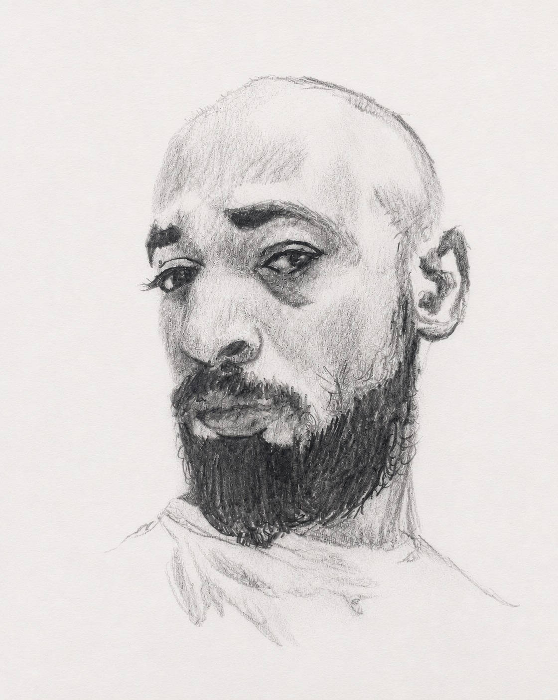
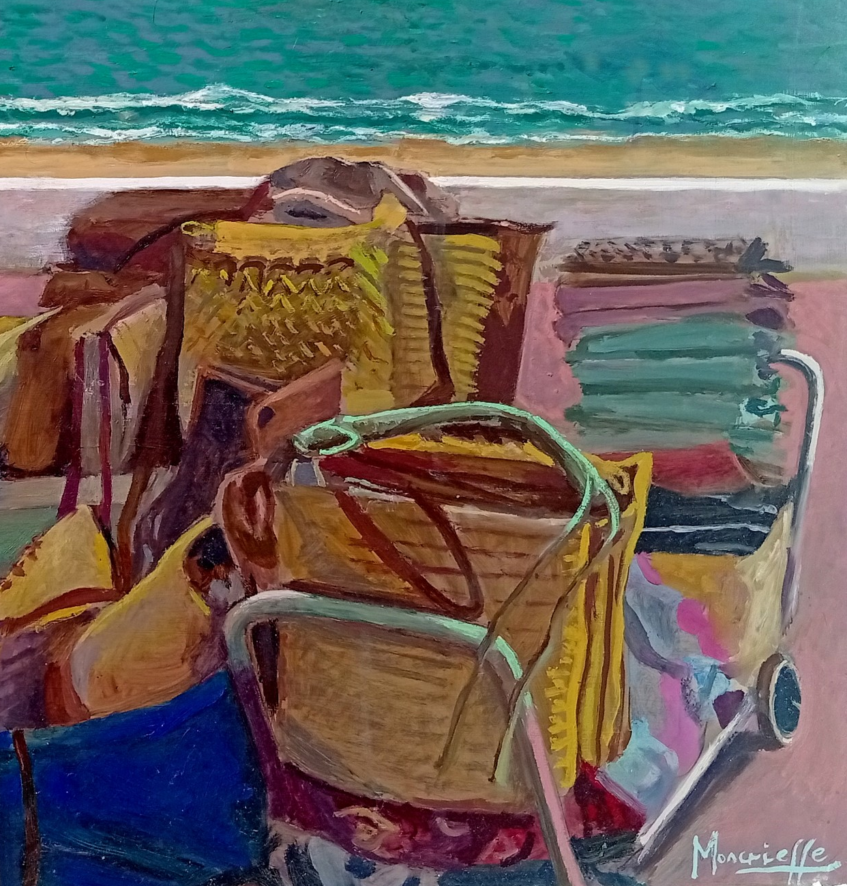
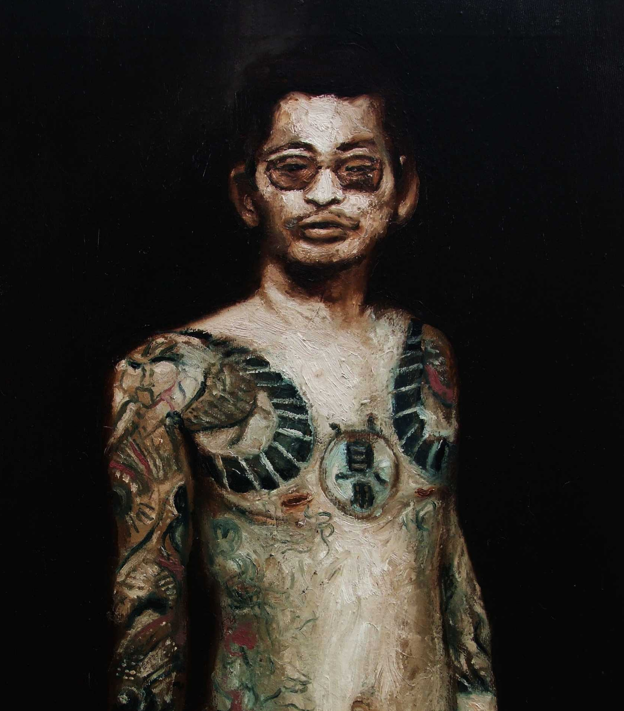
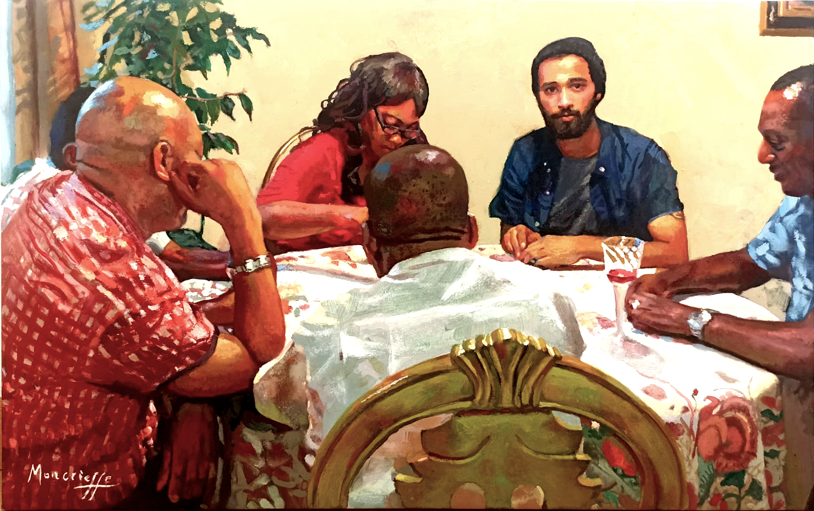
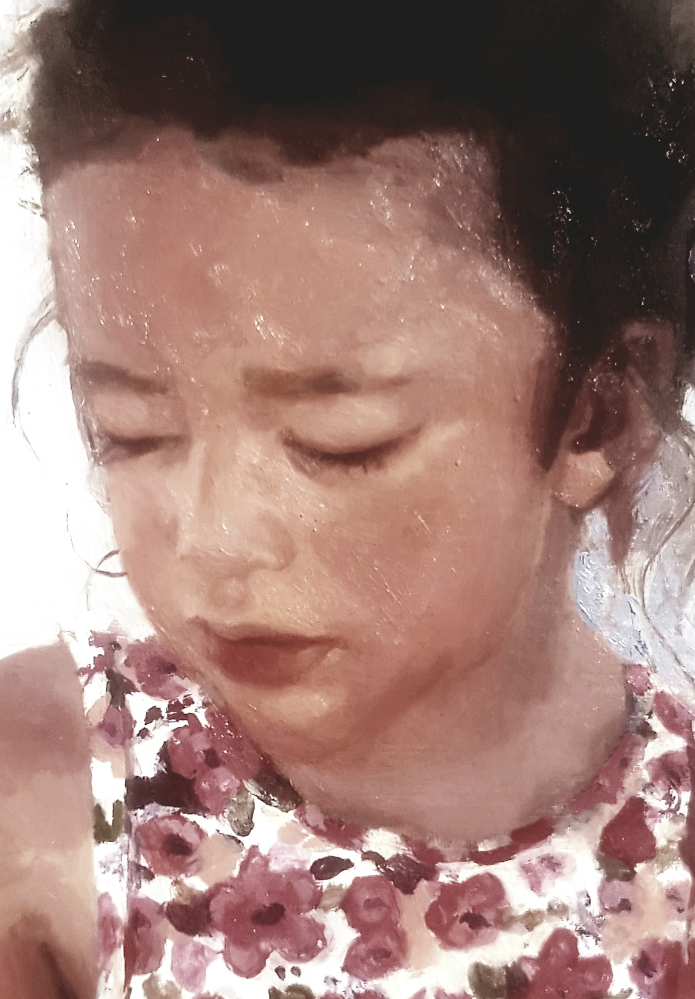
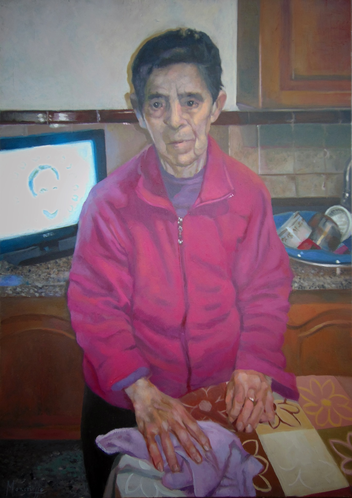
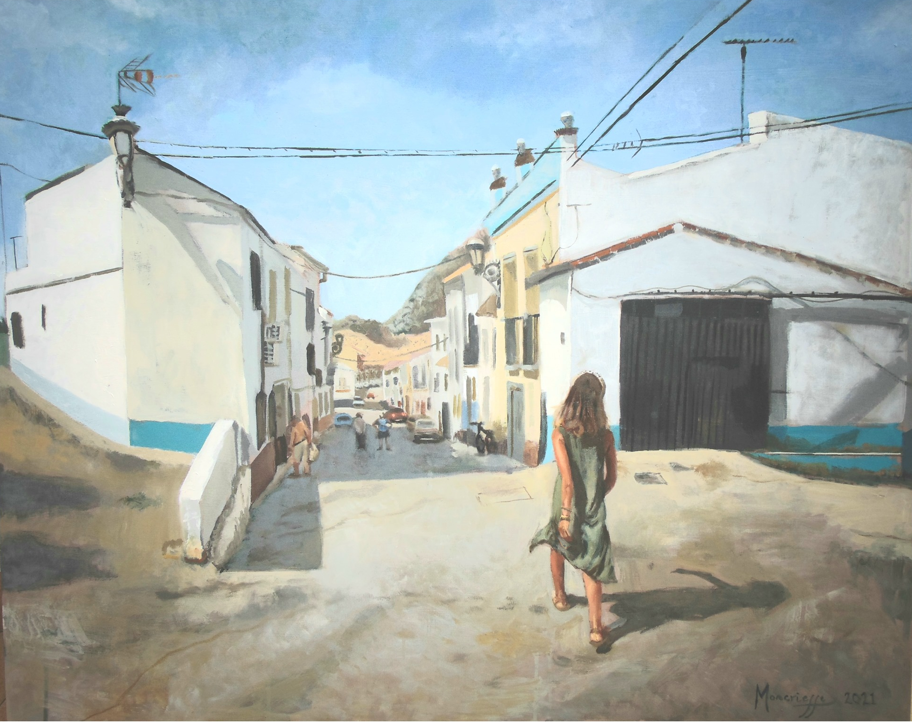
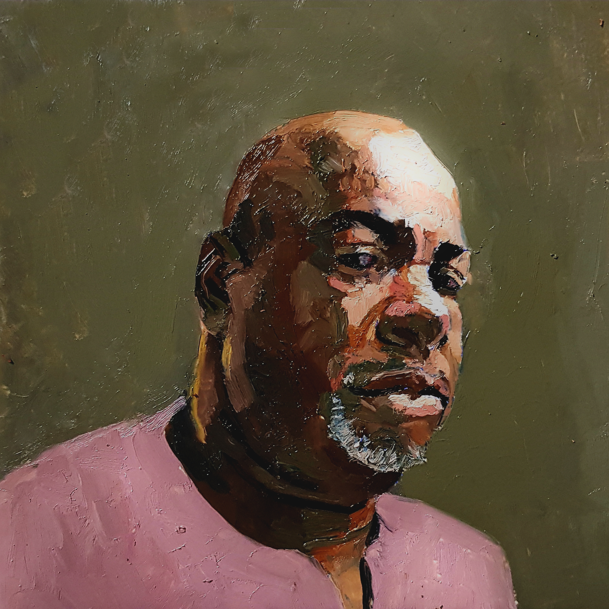
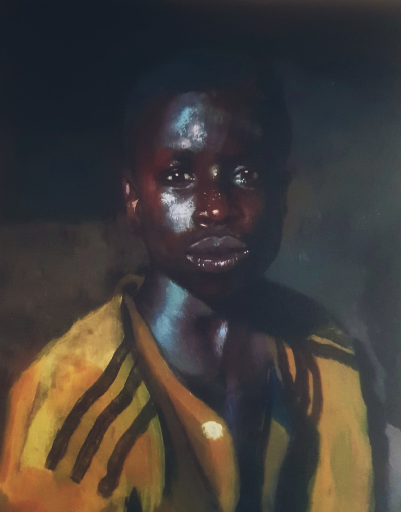

Moncrieffe

Alexander Moncrieffe is an artist based in Andalucía whose practice is rooted in traditional painting techniques and an ongoing exploration of colour, form and visual expression. His work moves between intimate studio paintings and larger-scale painted projects, allowing the same interest in colour and paint to be explored in very different environments.
Selected Works








Creative Practice
Alongside his studio practice, Moncrieffe develops creative projects connecting art, education and community.
Artist-in-residence programmes, workshops, murals and educational projects form part of an expanded artistic practice.
Explore Creative Practice →Contact
Email: A.Moncrieffe@hotmail.com